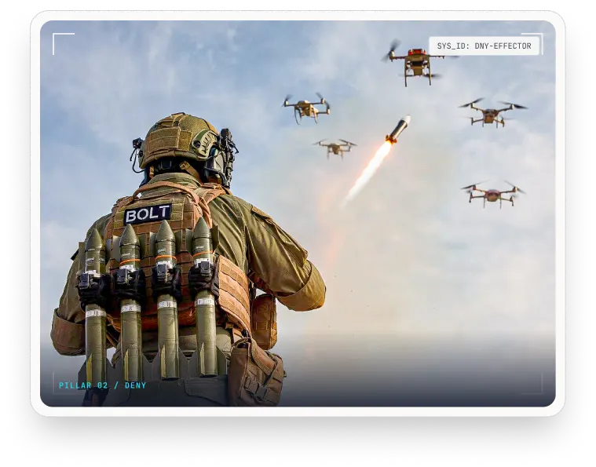
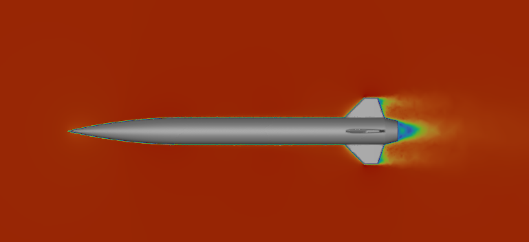
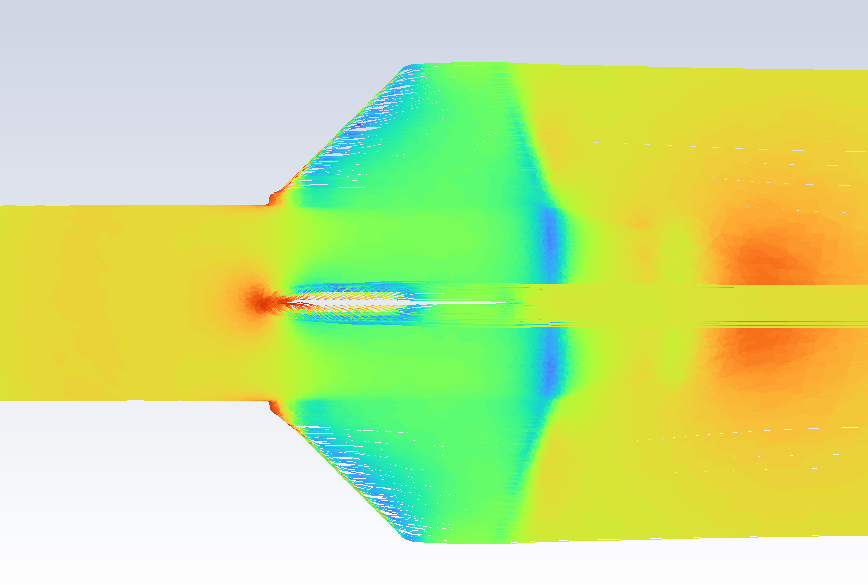
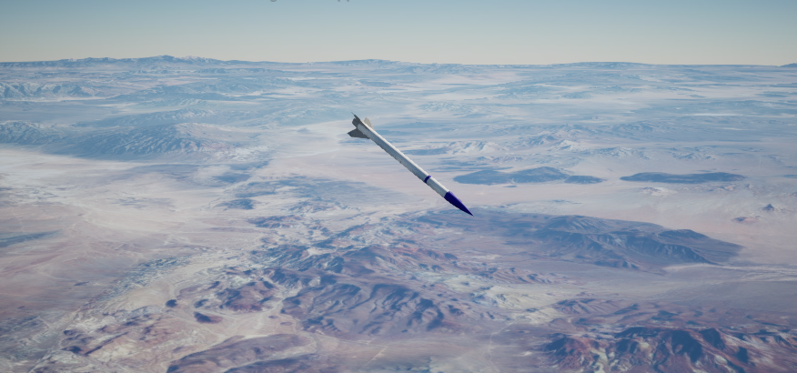

I served as the C-UAS Project Lead at Fortress Technologies Inc., directing an 8-person multidisciplinary engineering team in the design and development of counter-unmanned aircraft systems (C-UAS). My technical contributions focused on vehicle aerodynamics modeling via CFD, extracting stability derivatives for 6-DOF flight dynamics, and building high-fidelity 3D trajectory visualization pipelines in Unreal Engine.
Directing an 8-person engineering team involved establishing design milestones, coordinating hardware interface specifications, and managing prototyping schedules across aerodynamics, mechanical assembly, and software integration groups.
By establishing cross-functional hardware-in-the-loop review cycles, our team accelerated development iterations while keeping physical prototypes fully aligned with structural and electronics integration constraints.

Public concept render (courtesy of Fortress Technologies Inc.)


Click on any plot to expand in full detail
To characterize flight behavior across varying speed regimes and angles of attack, I ran Computational Fluid Dynamics (CFD) simulations in Ansys Fluent to model surface pressure distributions, drag forces, and aerodynamic moments.
The stability derivatives extracted from these CFD runs were fed directly into 6-DOF (Six Degrees of Freedom) flight dynamics algorithms. This mathematical modeling ensured predictable trim states, robust control authority, and dynamic stability during aggressive interception maneuvers.
Note: Plots on the left display scalar surface contours generated on a generic surrogate CAD airframe for demonstration purposes.
To translate multidimensional spatial telemetry into clear visual insight, I developed a high-fidelity visualization rendering pipeline using Unreal Engine.
The pipeline ingests physical flight telemetry logs and dynamically maps vehicle state vectors (position, orientation, velocity, and roll/pitch/yaw rates) into rendered 3D environments. This allowed our team to visually inspect dynamic flight trajectories, analyze state vector deviations, and evaluate spatial intercept behaviors.

Unreal Engine environment rendering trajectory spatial state vectors
Phone: (936) 900-3932
Email: brycerichristensen@gmail.com
LinkedIn: linkedin.com/in/brycerichristensen